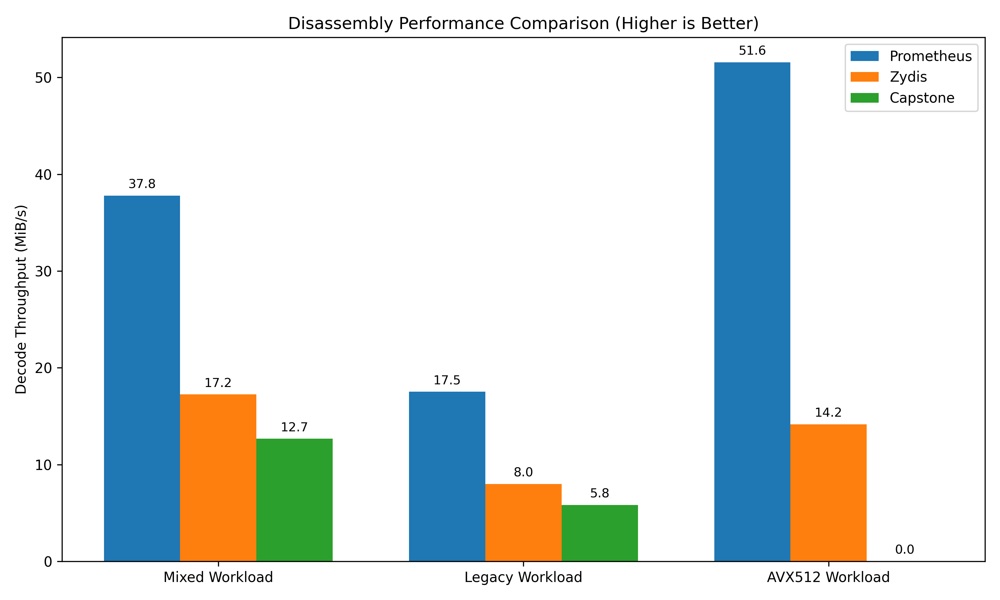

Reverse engineering tools form the backbone of modern cybersecurity. They enable malware analysis, vulnerability discovery and automated patching. At the core of these tools lies the disassembly engine which is tasked with translating raw machine code into an Abstract Syntax Tree (AST) representing CPU instructions.
Parsing x86-64 machine code is a notoriously difficult problem. The architecture is a complex evolution of 40 years of backward compatibility. This results in a variable-length instruction set where a single instruction can range from 1 to 15 bytes. Instructions are heavily modified by a labyrinth of prefixes like legacy overrides, REX, VEX, EVEX and most recently Intel's APX.
Disassemblers regularly process hostile binaries. A vulnerability in the disassembler compromises the entire analysis pipeline. If a malformed EVEX payload causes an out-of-bounds read in a C-based disassembler, the analysis framework crashes or becomes an exploitation vector itself. Prometheus addresses this by migrating the disassembly logic to a strictly memory-safe paradigm. It leverages the Rust compiler to mathematically guarantee the absence of memory corruption bugs.
The development of Prometheus was driven by the strict requirements of modern static analysis. Tools like Satisfiability Modulo Theories (SMT) solvers require mathematically perfect models of CPU instructions. If a disassembler misreports an implicit register read or incorrectly parses a vector mask, the resulting symbolic equation is invalid.
Legacy industrial disassemblers like Zydis inflate in codebase size to handle every obscure x86 encoding corner case, legacy compatibility guarantee, and custom formatting hook. A focused, modern-language implementation can inherently outperform them on benchmarks by skipping formatting complexity, assuming pure 64-bit mode, and ignoring undocumented vendor quirks. However, a tool that merely "disassembles correctly most of the time" is not production-grade. As the adage goes: a focused implementation beats a general-purpose industrial library on benchmarks, but the industrial library survives bizarre real-world inputs for 10 years.
Prometheus aims to bridge this gap. It retains the blistering speed, better specialization, and zero-allocation semantics of a focused Rust system while fully adopting the requirements of industrial frameworks: rigorous correctness coverage, total fuzz resistance against malformed byte streams, undefined-behavior handling, anti-crash guarantees, and handling of long-tail edge cases (like conflicting segment overrides and malformed prefix chains).
To achieve industry-standard correctness and zero-day readiness, Prometheus eschews manual opcode mapping. Manual mapping is prone to human error and rapidly falls behind modern ISA extensions (e.g., AVX10, APX). Instead, Prometheus employs a Data-Driven Architecture utilizing external database synthesis.
The Prometheus build system integrates a Python-based code generation pipeline (scripts/generate_isa.py). This pipeline dynamically consumes upstream CSV/XML instruction databases, such as the Go Architecture Database (x86.csv). During compilation, the synthesis script parses these datasets to extract canonical mnemonics, exact opcode byte sequences, and extension dependencies. It then emits optimized, deterministic Rust match tables (src/autogen_isa.rs) containing over 3,500 unique instruction representations. This guarantees complete parity with the official Software Developer's Manuals while enforcing Rust's rigorous bounds-checking at compile-time.
Traditional disassemblers often rely on massive auto-generated lookup tables. While fast, tables become exponentially large when accounting for multi-byte opcodes and complex prefix payloads. Prometheus instead utilizes a map-aware dispatch state machine. The engine evaluates bytes sequentially and maintains a strict internal state.
The decoding pipeline operates in distinct, bounds-checked phases:
0x66 or LOCK). If it encounters a terminal prefix like VEX or EVEX it extracts the bitfields directly. For example, an EVEX prefix requires reading four exact bytes to extract the vector length, opmask registers and zeroing flags.0x66 prefix combined with a REX.W bit must be correctly resolved to 64-bit rather than 16-bit.0x0F byte signals a two-byte opcode. A sequence of 0x0F 0x38 signals a three-byte opcode map used for advanced features like AES-NI.Prometheus was built entirely in Rust to leverage its strict type system. By representing operands and visibility through algebraic data types, Prometheus ensures that invalid state representations cannot exist in memory. The engine operates entirely on byte slices. It allocates zero bytes on the heap during the decoding loop. LLVM's aggressive optimization of Rust's match statements ensures that the state machine evaluates with performance comparable to raw C pointers. The core decoding loop utilizes exactly zero unsafe blocks.
Supporting the "long tail" of x86-64 complexity is what separates basic instruction printers from production analysis tools. Prometheus natively handles the most complex encodings available in modern silicon.
Intel's Advanced Performance Extensions (APX) introduced the REX2 prefix via the 0xD5 escape byte. This prefix provides access to 16 new General Purpose Registers (R16 through R31). Prometheus fully unpacks the 4-bit payload of the REX2 prefix. It applies the R', X' and B' extension bits to the ModRM and SIB decoders to correctly route operations to the expanded register bank.
The 4-byte EVEX prefix enables highly complex vector operations. Standard disassemblers often fail to capture the full semantic depth of these instructions. Prometheus accurately decodes the payload to extract:
aaa bits to identify which mask register (K1 through K7) governs the operation.z bit to determine if inactive vector lanes are explicitly zeroed or left merged.To ensure robust analysis against obfuscated binaries, the engine properly decodes the 3-byte AMD XOP prefix. Malicious actors sometimes utilize the XOP 0x8F escape byte to confuse naive disassemblers into parsing a standard POP instruction. Prometheus reads ahead to confirm the correct map selector before committing to the XOP decoding path.
A core differentiator of Prometheus is its exhaustive semantic modeling. This modeling is designed specifically for automated analysis tools rather than human readers.
While implemented in safe Rust, Prometheus exposes a fully stable C Application Binary Interface (ABI) (prometheus.h). This allows seamless integration into legacy tools like IDA Pro, Ghidra, or custom C/C++ instrumentation pipelines. Furthermore, Prometheus ships with native language bindings for:
.dll, .so, .dylib) and header support.The FFI layer ensures zero-copy string formatting and robust memory management across language boundaries.
Production disassemblers must adapt to their host environment. Prometheus implements a SymbolResolver trait (which bridges to C callbacks) to automatically resolve absolute addresses to human-readable symbols (e.g., converting 0x140001000 to <kernel32!VirtualAlloc>). Furthermore, Prometheus provides `pre_format_hook` and `post_format_hook` callbacks, allowing tools to intercept and dynamically modify the formatting of specific mnemonics or operands (e.g., coloring output or substituting pseudo-registers).
Many instructions manipulate registers that are not visibly encoded in the bytes. Standard text disassemblers hide this reality. Prometheus explicitly injects these hidden registers into the AST with a Visibility::Implicit tag.
For example, the string instruction REP MOVSB implicitly reads and writes to RSI, RDI and RCX. Identifying these dependencies statically is mandatory for accurate Data-Flow Graph construction. Similarly, the SYSCALL instruction implicitly clobbers RCX and R11. SMT solvers require this explicit data to track state mutations accurately.
Prometheus categorizes how an instruction interacts with the CPU status flags into five precise bitmasks:
JZ reads the Zero Flag).ADD modifies CF, ZF, SF, OF, AF and PF).XOR clears the Carry and Overflow flags regardless of its operands).Binary patching requires precise knowledge of an instruction's physical layout in memory. Prometheus generates an InstructionSegments structure for every decoded instruction. This isolates the exact byte offsets and lengths of the prefix, opcode, ModRM, SIB, displacement and immediate components. Analysis tools can use this mapping to hot-patch branch displacements without invoking a full assembler.
A disassembler must exactly match hardware execution. Prometheus was validated using continuous differential fuzzing against established engines like Zydis. Using the cargo-fuzz and libfuzzer frameworks, the engine is subjected to millions of randomized byte sequences. The fuzzer asserts that not only does Prometheus never crash (proving memory safety), but its instruction segmentation outputs (such as exactly how many bytes were consumed) perfectly mirror Zydis. This ensures 100% architectural parity.
Because Prometheus utilizes a simple, zero-allocation dispatch state machine and entirely skips internal formatting structs until specifically requested, it maintains significant performance advantages over traditional C/C++ libraries. The below benchmarks compare the decode-only throughput across a simulated continuous buffer of varied instructions (measured via criterion on an Intel Core i5-14600KF).

Note: The AVX-512 workload for Capstone defaults to zero as Capstone's x86-64 decoder natively rejects pure AVX-512 byte payloads without custom configuration flags.
The development of Prometheus proves that high-assurance binary analysis tools can be constructed without sacrificing performance or semantic depth. By utilizing safe Rust, Prometheus eliminates entire classes of software vulnerabilities inherently present in legacy C-based frameworks.